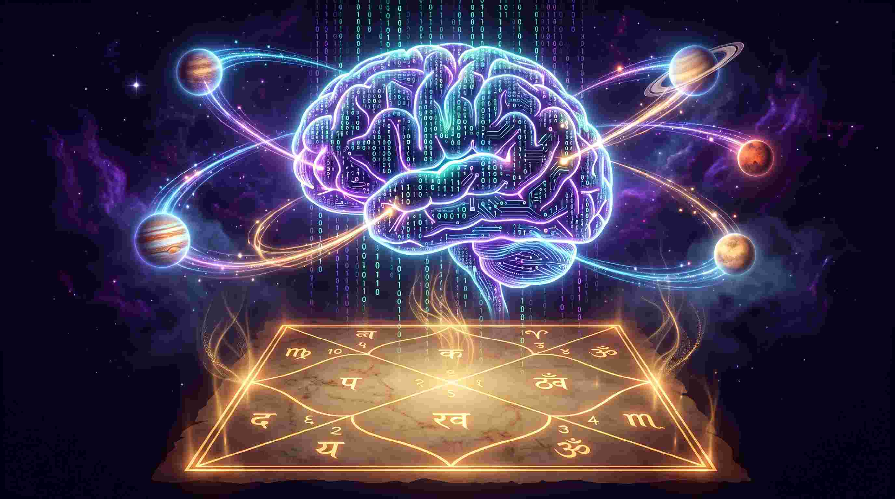

जब हम "ज्योतिष" शब्द सुनते हैं, तो अक्सर हमारे दिमाग में किसी पुराने पेड़ के नीचे बैठे तपस्वी या पुरानी लाल रंग की पोथियों की तस्वीर उभरती है। लेकिन क्या आप जानते हैं कि हजारों साल पहले लिखा गया वैदिक ज्योतिष (Vedic Astrology) आज के आर्टिफिशियल इंटेलिजेंस (AI), मेडिकल साइंस और आधुनिक शेयर बाजार के दौर में भी उतना ही सटीक और वैज्ञानिक है?
एक मेडिकल छात्र होने के नाते, मेरा अधिकांश समय जटिल पैथोलॉजी (Pathology) की किताबों और मानव शरीर की शारीरिक प्रणालियों को समझने में बीतता है। लेकिन जब मैंने गहराई से वैदिक ज्योतिष का अध्ययन किया, तो मुझे यह देखकर आश्चर्य हुआ कि यह कोई अंधविश्वास नहीं, बल्कि ब्रह्मांडीय डेटा साइंस (Cosmic Data Science) है। आइए गहराई से समझते हैं कि यह प्राचीन ज्ञान आज के आधुनिक युग में कैसे काम करता है।
"आपकी जन्म कुंडली (Kundali) असल में ब्रह्मांड द्वारा लिखा गया एक 'सोर्स कोड' है। यदि आप इसे डिकोड करना सीख लें, तो आप अपनी शारीरिक, मानसिक और वित्तीय प्रोग्रामिंग को हैक कर सकते हैं।"
1. मेडिकल एस्ट्रोलॉजी: पैथोलॉजी और ग्रहों का अद्भुत विज्ञान
आधुनिक चिकित्सा विज्ञान (Modern Medical Science) बीमारियों का पता लगाने के लिए रक्त परीक्षण, एमआरआई (MRI) और पैथोलॉजी रिपोर्ट्स का उपयोग करता है। लेकिन क्या आप जानते हैं कि एक बीमारी के शरीर में प्रकट होने से महीनों पहले, उसका बीज हमारे सूक्ष्म शरीर (Astral Body) में बोया जा चुका होता है? यहीं पर 'मेडिकल एस्ट्रोलॉजी' काम आती है।

ग्रहीय प्रभाव और बीमारियाँ:
चिकित्सा ज्योतिष (Medical Astrology) के अनुसार, हमारे शरीर का हर एक अंग एक विशिष्ट ग्रह और भाव से जुड़ा है। उदाहरण के लिए:
- यदि आपकी कुंडली के छठे भाव (रोग भाव) में राहु या शनि का गोचर हो रहा है, तो यह अक्सर ऐसी बीमारियों का संकेत देता है जिन्हें आधुनिक मशीनें (Diagnostic tools) आसानी से पकड़ नहीं पातीं (जैसे Autoimmune diseases या रहस्यमयी वायरल संक्रमण)।
- सूर्य का कमजोर होना विटामिन डी की कमी, हृदय की समस्याओं (Cardiovascular issues) और हड्डियों के कमजोर होने का सीधा संकेत है।
- जब मैं एनाटॉमी पढ़ता हूँ, तो मुझे स्पष्ट दिखता है कि कैसे 'मंगल' हमारे रक्त प्रवाह (Blood flow) और बोन मैरो को नियंत्रित करता है, जबकि 'चंद्रमा' हमारे शरीर के तरल पदार्थों और मानसिक अवसादों (Depression) का स्वामी है।
मेडिकल एस्ट्रोलॉजी डॉक्टर का विकल्प नहीं है, बल्कि यह एक 'प्रिवेंटिव टूल' (Preventive Tool) है जो आपको सचेत करता है कि भविष्य में आपको किन स्वास्थ्य समस्याओं के प्रति सतर्क रहना है।
2. मुंडेन एस्ट्रोलॉजी: वैश्विक बाजार, AI और ई-व्हीकल (EV) इंडस्ट्री
क्या वैदिक ज्योतिष हमें बता सकता है कि स्टॉक मार्केट कब क्रैश होगा या कौन सी नई तकनीक दुनिया पर राज करेगी? बिल्कुल!
जब हम व्यक्तिगत कुंडली से हटकर देशों, शेयर बाजारों और कॉर्पोरेट कंपनियों की कुंडलियों का अध्ययन करते हैं, तो उसे मुंडेन एस्ट्रोलॉजी (Mundane Astrology) कहते हैं। आज के समय में हर कोई AI टूल्स (जैसे NotebookLM, Gemini, HeyGen) और यूरोपीय इलेक्ट्रिक व्हीकल (European EV markets) के बारे में बात कर रहा है। लेकिन ज्योतिषीय दृष्टि से यह अचानक नहीं हुआ है।
- राहु और कृत्रिम बुद्धिमत्ता (AI): ज्योतिष में राहु को 'भ्रम', 'मशीन', और 'अदृश्य शक्ति' का कारक माना जाता है। पिछले कुछ वर्षों में राहु की मजबूत स्थिति ने ही आर्टिफिशियल इंटेलिजेंस (AI) और वर्चुअल रियलिटी को जन्म दिया है। राहु सीमाएं तोड़ता है, और AI ठीक यही कर रहा है।
- शनि, मंगल और EV मार्केट: इलेक्ट्रिक वाहन (Electric Vehicles) ऊर्जा (मंगल) और बैटरी/खनिज (शनि) का संयोजन हैं। जब भी शनि और मंगल का विशेष गोचर होता है, आप BMW या Volkswagen जैसी कंपनियों के स्टॉक में भारी उतार-चढ़ाव देख सकते हैं।
- डिजिटल फाइनेंस: जो लोग Trade Republic या Scalable Capital जैसे प्लेटफार्म्स पर ट्रेडिंग करते हैं, उन्हें हमेशा बुध (Mercury) और राहु के गोचर पर नज़र रखनी चाहिए, क्योंकि ये दोनों ग्रह डिजिटल ट्रेडिंग और एल्गोरिदम को सीधे नियंत्रित करते हैं।
3. ज्योतिष और आधुनिक आर्टिफिशियल इंटेलिजेंस (AI) की समानता
कई लोग मुझसे पूछते हैं कि क्या ज्योतिष तार्किक है? मेरा जवाब हमेशा 'हाँ' होता है। वास्तव में, वैदिक ज्योतिष दुनिया का सबसे पुराना एल्गोरिदम (Algorithm) है।

जिस तरह AI और मशीन लर्निंग विशाल डेटासेट (Big Data) का विश्लेषण करके भविष्य के रुझानों (Trends) की भविष्यवाणी करते हैं, ठीक उसी तरह एक ज्योतिषी जन्म के समय ग्रहों की स्थिति (Planetary Degrees, Nakshatras, Dasha systems) रूपी 'डेटा' का विश्लेषण करके मनुष्य के भविष्य के रुझानों की भविष्यवाणी करता है।
फर्क सिर्फ इतना है कि AI सिलिकॉन चिप्स पर चलता है, और ज्योतिष ऋषियों (Sages) की उच्च चेतना और गणितीय गणनाओं पर आधारित है। दोनों ही पैटर्न्स (Patterns) पहचानने का विज्ञान हैं।
4. आधुनिक मानसिक तनाव और ज्योतिषीय उपाय (Remedies)
आज की भागदौड़ भरी जिंदगी में डिप्रेशन, एंग्जायटी और स्ट्रेस आम हो गया है। जब हम मेडिकल साइंस के नजरिए से देखते हैं, तो हम इसके लिए कॉर्टिसोल (Cortisol) हार्मोन को जिम्मेदार ठहराते हैं। लेकिन ज्योतिष के नजरिए से, यह 'चंद्रमा' और 'बुध' पर पाप ग्रहों के प्रभाव का परिणाम है।
प्राचीन वैदिक उपाय (Vedic Remedies) आज भी अचूक क्यों हैं?
- रत्न चिकित्सा (Gemstone Therapy): यह कोई जादू नहीं है। रत्न विशिष्ट प्रकाश तरंगों (Light frequencies) को अवशोषित करते हैं और शरीर के इलेक्ट्रोमैग्नेटिक फील्ड (Electromagnetic field) को संतुलित करते हैं, जो सीधे हमारे नर्वस सिस्टम को शांत करता है।
- मंत्र विज्ञान (Mantra Science): मंत्रों का विशिष्ट ध्वन्यात्मक (Acoustic) उच्चारण मस्तिष्क में वाइब्रेशन (Vibration) पैदा करता है, जो तनाव पैदा करने वाले हार्मोन्स को कम करता है और न्यूरोप्लास्टिसिटी (Neuroplasticity) को बढ़ाता है।
- ध्यान और दान: ये उपाय सीधे तौर पर डोपामाइन और ऑक्सीटोसिन (Happy Hormones) बढ़ाते हैं, जिससे व्यक्ति का 'कर्म' और 'मन' दोनों शुद्ध होते हैं।
निष्कर्ष: विज्ञान और आध्यात्मिकता का महासंगम
वैदिक ज्योतिष अंधविश्वास नहीं है, बल्कि यह एक ऐसा उच्च विज्ञान है जिसे समझने के लिए खुले दिमाग और तार्किक दृष्टिकोण की आवश्यकता है। चाहे वह मेडिकल पैथोलॉजी की किताबों (Robbins Pathology) का अध्ययन करना हो, वीडियो एडिटिंग के लिए AI टूल्स का इस्तेमाल करना हो, या एक जन्म कुंडली के रहस्यों को सुलझाना हो—मूल सिद्धांत एक ही है: गहराई में छिपे हुए सत्य (Data) को खोजना।
आधुनिक युग में प्राचीन ज्ञान को अपनाकर, हम न केवल अपने करियर और वित्तीय लक्ष्यों को प्राप्त कर सकते हैं, बल्कि एक संतुलित, स्वस्थ और सार्थक जीवन भी जी सकते हैं। आपके सितारे आपको आपकी क्षमता बताते हैं, लेकिन उन सितारों तक पहुंचना आपकी अपनी मेहनत और कर्म पर निर्भर करता है।